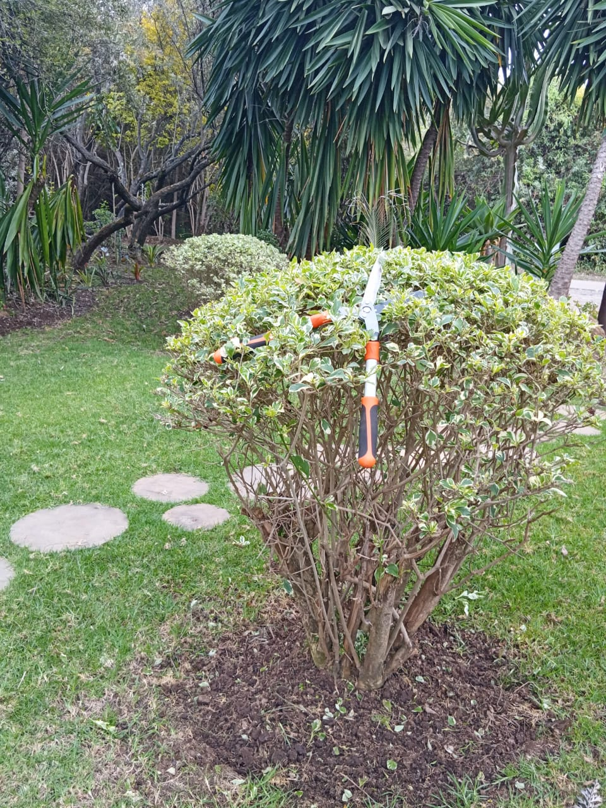
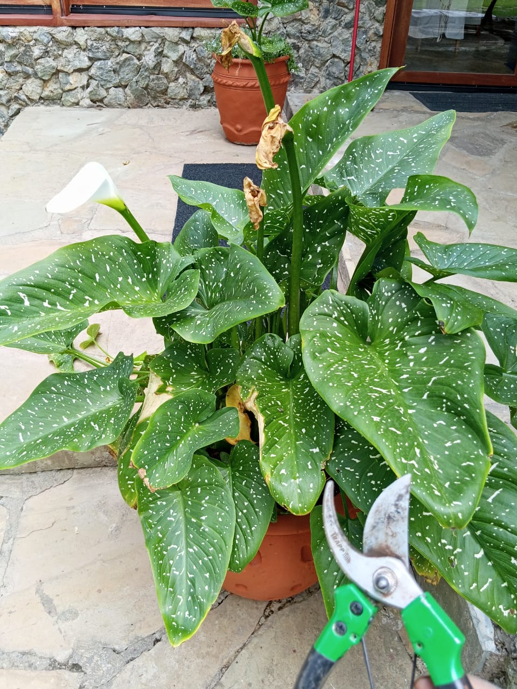
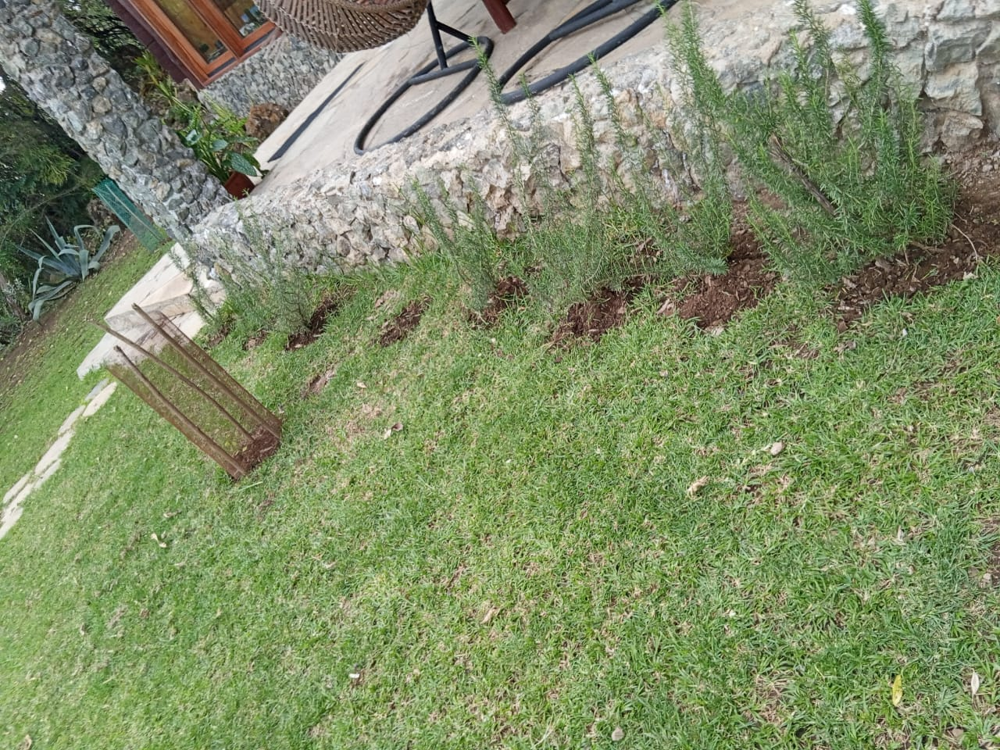

Mucheru World of Golf
- Dam 3 Excavation Complete (100%): Full excavation of the Dam 3 retention basin was successfully concluded today. The Sunward SWE210 hydraulic tracked excavator completed all sub-grade excavation, base leveling, and side-slope profiling.
- Dam 2 Deepening in Progress: Earthmoving operations advanced deepening works on Dam 2 to maximize overall water storage capacity for the golf course irrigation network.
- Machinery & Haulage Operations: The excavator operated for 9 hours (@ KES 8,500/hr = KES 76,500), the front loader operated for 8 hours (@ KES 6,500/hr = KES 52,000), and damping tippers completed 47 haulage trips (@ KES 1,000/trip = KES 47,000). Total daily earthmoving expenditure totaled KES 175,500.00.
🎯 Key Accomplishment: Dam 3 Basin Excavation 100% Complete
The major excavation and shaping of Dam 3 have been completed to design depth and perimeter specification, creating a primary water reservoir for course-wide irrigation.
| Equipment / Resource | Operating Volume / Hours | Unit Rate (KES) | Total Cost (KES) | Operational Scope & Locations |
|---|---|---|---|---|
| Hydraulic Excavator | 9 Hours | @ KES 8,500 / hr | KES 76,500.00 | Dam 3 basin excavation completion & Dam 2 deepening |
| Front Loader (Backhoe) | 8 Hours | @ KES 6,500 / hr | KES 52,000.00 | Tee Box No. 7 levelling & dumped soil grading |
| Damping Tipper Lorries | 47 Trips | @ KES 1,000 / trip | KES 47,000.00 | Excavated soil haulage from Dam 3 to damping zones |
| Total Daily Machinery & Haulage Operations | KES 175,500.00 | |||

Aerial Overview of Dam 3 Basin
High-angle drone view showing the fully excavated Dam 3 basin, backhoe loader on the bed floor, and blue excavator on the upper bank with green sub-bases in the background.

Heavy Earthmoving & Soil Haulage
Sunward SWE210 hydraulic excavator loading excavated soil into a tipper dump truck along the embankment during final excavation stages.

Basin Floor Profiling & Deepening
Tracked excavator shaping the inner slopes and base elevations of Dam 3 to ensure proper hydrological flow and water retention.

Longitudinal View of Excavated Basin
Wide perspective down the length of the completed Dam 3 reservoir showing cleanly graded banks and level bed ready for subsequent stages.

Completed Dam 3 Basin Profile
Full view of the finished excavation basin highlighting uniform depth, stable embankment side-slopes, and perimeter vehicle access tracks.
Finished Dam 3 Earthworks
Ground-level confirmation of the completed Dam 3 excavation looking toward the earthen stockpiles and perimeter tree lines.
- Tee Box No. 7 Leveling Complete: Earthworks and mechanical grading for Tee Box No. 7 were completed today using the XGMA front loader during its 8-hour shift.
- Sub-base Preparation: The tee box surface was leveled to specification, establishing the precise elevation and slope for turf establishment.
🎯 Key Accomplishment: Tee Box No. 7 Levelling Complete
Mechanical grading and surface leveling for Tee Box No. 7 have been successfully finalized.

XGMA Loader Grading Tee Box No. 7
Front loader spreading and leveling soil across Tee Box No. 7 to achieve the required uniform grade and compaction.
- Green No. 11 Drainage Trenches Complete: The full network of sub-surface drainage trenches for Green No. 11 was excavated and completed according to the herringbone drainage layout. Perimeter white markings clearly define the green boundary.
- Greens No. 12, 13 & 17 Marking Preparation Done: Site clearing, earth raking, and surface grading were completed across the planned areas for Greens 12, 13, and 17 in preparation for immediate boundary line marking and excavation.
🎯 Key Accomplishment: Green No. 11 Drainage Trenching Complete
Green No. 11 sub-surface trenching has been fully excavated and outlined, preparing the sub-base for gravel, drainage pipes, and geo-textile membrane.

Green No. 11 Drainage Trench Network
Cleanly cut drainage trenches forming the sub-surface drainage grid for Green No. 11, enclosed within chalk boundary perimeter markings.

Detailed View of Green No. 11 Trenches
Central trunk trench and lateral feeder channels excavated to uniform depth across the Green No. 11 foundation.

Ground Crew Grading Zone for Greens 12, 13 & 17
Field team raking, breaking soil clods, and leveling the ground in preparation for engineering boundary marking.
Surface Preparation & Soil Removal
Workers using wheelbarrows and spades to clear high spots and level the expanse for upcoming green demarcation.

Cleared Green Zone Ready for Marking
Wide open area graded and prepped for laying out perimeter marking stakes and chalk guidelines for Greens 12, 13, and 17.
Chaka Farms
Daily dairy yields were recorded in Litres across morning and evening milking sessions under the supervision of Kamandau, with direct ration allocations provided to goat kids.
| Session | Gross Yield (Litres) | Goat Kids Ration (Litres) | Net Available (Litres) | Supervisor |
|---|---|---|---|---|
| Morning Milking | 3.5 L | 0.5 L | 3.0 L | Kamandau |
| Evening Milking | 2.5 L | 0.5 L | 2.0 L | Kamandau |
| Total Daily Production | 6.0 Litres | 1.0 Litre | 5.0 Litres | Kamandau |
📊 Dairy Yield Summary
Total daily milk output reached 6.0 Litres (3.5L morning / 2.5L evening). 1.0 Litre total was allocated for goat kid nourishment (0.5L morning and evening), leaving 5.0 Litres net production.
- Kennel Sanitation & Manners: Thorough cleaning and disinfection of kennel facilities, reinforced with crate and kennel manners discipline.
- Morning Off-Leash Walking & Field Exercise: Dogs completed structured morning off-leash field walking drills to build endurance, focus, and recall responsiveness.
- Afternoon Spin & Paw Commands: Handlers conducted agility training focusing on spin commands and paw placement responsiveness in the afternoon.
- Paddock Socialization with Goats: Controlled exposure and socialization exercises conducted while goats grazed in the paddocks to reinforce non-reactive behavior around livestock.
- Obedience & Patience Drills: Structured patience drills conducted to instill discipline during feeding and handling routines.
- Office Lawn Irrigation: Willy conducted lawn irrigation routines around the farm management office compound.
- General Compound Cleanliness & Maintenance: Margaret and Monica carried out comprehensive sweeping, tidying, and maintenance across the general farm compound and walkways.
- Timber Movement from Golf Site: Kinoti supervised the transfer and neat stacking of timber poles moved from the Mucheru Golf site to the farm storage yard for upcoming farm structures and fencing projects.

Timber Staged at Chaka Farm
Neatly stacked forestry timber poles transferred from Mucheru Golf site and organized safely at the Chaka Farm holding yard.
Kabete Residence
- Main Storage Tank Slab Plastering Complete (100%): Masonry plastering and structural surface rendering for the circular foundation slab supporting the elevated main water storage tank were successfully completed today. The masonry team applied a bonding coat, followed by rough cast rendering and finished with a smooth, uniform cement screed across the curved perimeter wall and top slab surface.
- Filter Base Slab Complete: Construction, formwork casting, and smooth cement finishing of the dedicated concrete base slab for the water filtration unit adjacent to the stone retaining wall was finalized, providing a stable foundation for filtration equipment.
- Water Pump House Roofing in Progress: Timber batten assembly and interlocking clay tile roofing for the protective enclosure sheltering the pressure booster pump, electronic pressure controller, and green PPR manifold connections progressed steadily on-site.
- Main Water Pump Roof Paint Works: The fabricated structural steel framework for the water pump shelter roof was cleaned, primed, and coated in protective gloss black paint against the retaining stone wall.
🎯 Key Accomplishment: Main Storage Tank Slab Plastering & Filter Base Complete
The circular masonry foundation for the elevated water storage tank has been 100% plastered with a smooth, weather-sealed cement finish, alongside the completed water filter concrete base slab.

Elevated Water Tank & Masonry Foundation
Overview of the circular stone masonry base beneath the steel water tank tower undergoing surface preparation and plastering.

Top Slab Surface Mortar Leveling
Detailed view of the circular tank slab top surface and stone edging receiving initial cement mortar leveling.

Mason Applying Curved Wall Plaster
Mason applying rough cement plaster and rendering the curved exterior stone wall of the water storage tank base.

Plaster Layer Applied to Curved Wall
Fresh mortar coat smoothed evenly across the cylindrical profile of the tank foundation.

Precision Edge & Plumb Leveling
Straight-edge leveling tool used to achieve a clean, smooth, and plumb finish along the top edge and curved wall.

Completed Smooth Tank Slab Plastering
Finished smooth cement plaster coat fully cured across the top surface and curved perimeter wall of the main water tank slab.

Finished Filter Base Concrete Slab
Completed and smoothly rendered concrete base slab constructed adjacent to the retaining wall to support water filtration apparatus.

Water Pump House Clay Tile Roofing
Clay roof tiles fitted onto the pump shelter roof structure housing the electric booster pump, controller, and piping manifolds.

Pump House Metal Framework Paintworks
Painter applying gloss black protective paint coating to the steel framework of the water pump shelter roof.
- Clearance & Demolition at Fireplace (Ongoing): Field workers continued deep red soil excavation and demolition of the old stone masonry within the sunken outdoor fireplace pit area bordering the river terrace.
- Grills Next to the River Paint Works Complete: Anti-corrosive black gloss painting was fully completed on the metal perimeter safety grill railings bordering the river bank path.
- Shelves Next to Hanging Lines Painted: Multi-tiered wooden storage and drying racks positioned against the exterior wall beneath the tiled eave next to the clothes hanging lines were coated in protective reddish-terracotta timber paint.
- Hooks for Shelves Behind Main House Installed: Custom wooden dowel peg hooks on support battens were installed along the upper timber wall inside the utility storage area behind the main house.
🎯 Key Accomplishment: River Trail Perimeter Grills Painting Complete
All metal safety railings and grillwork bordering the river path have been fully coated in weather-resistant protective black paint.

Fireplace Pit Excavation & Demolition
Workers using pickaxes and shovels to clear rubble, break old stone foundations, and excavate red soil in the sunken fireplace zone.

River Trail Metal Grills Painting Complete
Freshly coated black metal perimeter railings along the lush river trail providing safety and rust protection.

Painted Utility Drying & Storage Shelves
Multi-tiered timber utility shelves finished with reddish-terracotta protective paint along the exterior wall by the hanging lines.

Custom Wall Storage Peg Hooks Installed
Row of wooden dowel peg hooks fitted onto timber framing inside the utility storage area behind the main house.
Amani Cottage
- Entire Compound Sweeping: Edwin swept and cleared all compound lawns, paved stone pathways, and veranda borders.
- Flower Bed & Rockery Weeding: Thorough manual weeding carried out across the front flower beds and the ornamental stone rockery garden.
- Flower & Shrub Pruning: Pruned decorative garden shrubs, trimmed variegated bushes with hedge shears, and removed spent foliage from potted Arum lilies on the stone patio.
- Tree Sapling Care: Inspected and cultivated root zones for young staked saplings in the front lawn.

Hedge & Shrub Pruning
Hedge shears utilized to shape and maintain healthy growth on ornamental variegated shrubs in the cottage gardens.

Potted Plant Care & Deadheading
Pruning spent leaves and conditioning potted white Arum lilies (Zantedeschia) situated on the veranda patio.

Weeded & Aerated Garden Beds
Cleanly weeded rosemary and flower borders alongside the stone foundation wall of Amani Cottage.
.jpeg)
Tree Sapling Cultivation
Young sapling protected with wooden stakes, featuring hoed and weeded topsoil ring for enhanced water and nutrient uptake.
- Carpet Washing & Cleaning: Floor carpets and rugs were thoroughly washed, sanitized, and sun-dried along the exterior stone veranda.
- Interior Dusting & Living Space Tidying: Complete dusting of all furniture, stone fireplace, coffee tables, and decorative fixtures.
- Upstairs & Downstairs Deep Clean: Deep floor cleaning, surface sanitization, and room arrangement conducted across both upstairs and downstairs sections of the residence.
.jpeg)
Pristine Living Room Interior
Overhead view of the immaculate living room, featuring arranged sectional seating, dusted tables, polished stone floors, and clean stone fireplace.

Carpet Washing & Sun Drying
Patterned floor mats and carpets washed, cleaned, and laid out along the stone patio ledge for drying.